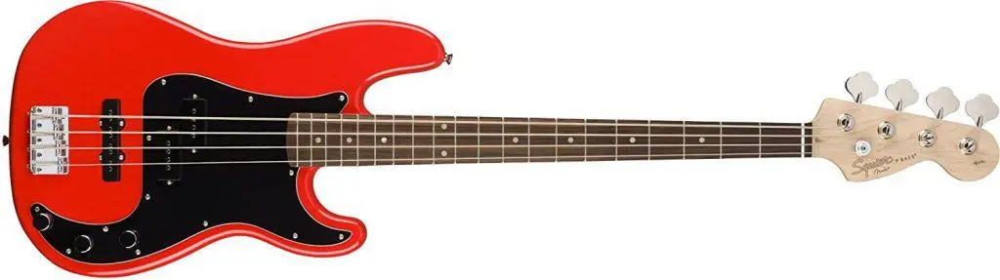

Fender Affinity SeriesNovedad
Una magnífica puerta de entrada a la tradicional familia Fender®, el Squier® Affinity Series™ Precision Bass® PJ ofrece un diseño legendario y un tono por excelencia para los aspirantes a bajistas de hoy.
Este P Bass® presenta varios refinamientos, como un cuerpo delgado y liviano, un perfil de mástil en forma de "C" delgado y cómodo y clavijero de engranajes abiertos de estilo vintage para una afinación suave y precisa. Con una pastilla de mástil P Bass de bobina simple dividida Squier y una pastilla de puente J Bass® de bobina simple para una amplia variedad de tonos
- Body
- Body Material: Álamo
- Body Shape: precision Bass®
- Neck
- Neck Material: Arce
- Neck Finish: Satin Urethane with Gloss Urethane Headstock Face